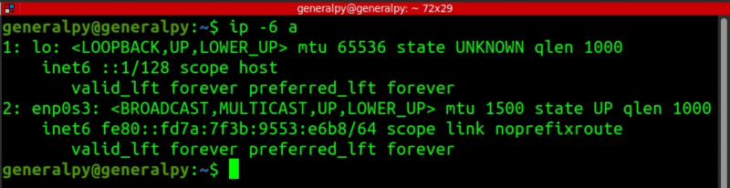

There are 2 major commands which are used to display and configure network interfaces, namely ifconfig and ip.
ifconfig is old command which is part of net tools package and is still used nowadays. We have to install net tools to use ifconfig.
ip command is realtively new command and is available in almost every new linux distro.
To display interfaces properties, use ifconfig or ip address show.
Use -a flag to show all interfaces, disabled or enabled.
Syntax of ip command is
ip <object> <command>
Using ip, we work on objects (address in above example) and use commands on that object.
We can also use short forms when using ip command.
addreess, addr, a these all can be used to configure address object. We also can omit show completely as displaying is the default behaviour of address object.
If you want to display only ipv6 or ipv4 addresses , use -6 or -4 respectively with the ip command.

Both ifconfig and ip command show identical information.
They both show network interface name, which is generic names used by linux. lo means loopback address, en means ethernet and the p0s3 shows that network interface is mount on pci slot port 0 slot 3. wl is used for wireless network card. eth is also used for ethernet.
ifconfig also shows amount of packets received and transmitted.
We can get information about any particular interface by using interface name after ifconfig or using ip addr show dev interface_name.
ifconfig command doesn't show configs like default gateway but we have route command from the same net tools package which performs that task.
-n flag is used to show everything in numeric form.
Row with G in flags shows that the gateway is used as default gateway.
Same can be done with ip route show.
DNS is configured by systemd-resolve service in newer versions of linux. To display basic dns properties, use systemd-resolve --status